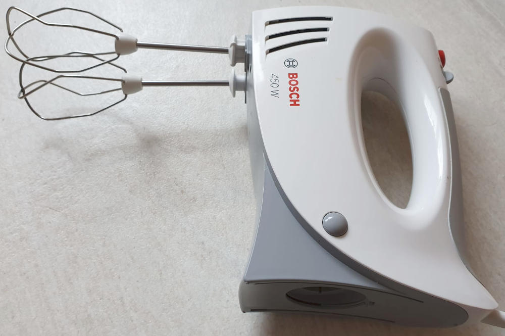

Apple Pancakes are a sweet main dish. Yes, I know, for most people outside of Germany this sounds superweird. If you are used to US pancakes, be aware that the following pancakes taste way different. No need for maple syrup as my apple pancakes have a nice flavour on their own.
It takes about 30 minutes.
Ingredients
The following is for 4 people (or very hungry 2.5 people).
- 4 eggs
- 400 g flour
- 100 ml sparkling water
- 400 ml milk
- 8 g (1 package) of vanilla sugar
- 200 g sugar
- 1 apple
- a tiny bit of salt
- oil
As side dishes, you might want one of the following:
- apple sauce (recommended)
- sugar with lemon
- Whipped cream
- Nutella or maple syrup ... but then you don't have the nice taste of the pancake 🙄
Tools
- Kitchen Stove with one hotplate
- Pan
- Mixing bowl
- Whisk or hand mixer (I've had the Bosch MFQ3540 for 4 years now and I'm quite happy with it)
- Small bowl for the egg white where you can easily mix it (hand mixer highly recommended)
- Peeler to cut away the skin of the apple
- Grater (for cutting the apple into thin slices)
{kind=link}

Preparation
- Separate egg white and yolk
- Beat the egg white until it is foamy. When you put the bowl upside down, it should stick in there.
- Add all other ingredients except for the apple
- Fold in the egg foam (Eischnee unterheben)
- Peel the apple, cut it into small slices and add them to the dough.
- Put oil in the pan and fry the pancakes.